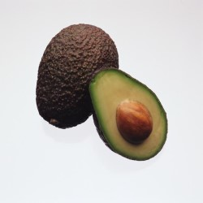

초 간단! 아보카도 과카몰리 만들기
아보카도 과카몰리 만드는 방법
- 아보카도는 칼집을 넣어준 후 반을 갈라서 씨를 빼고 속을 스푼으로 파내어주세요.
- 볼에 아보카도를 넣고 으깨어주세요.
- 적양파와 할라피뇨를 잘게 다져서 물기를 제거하고 다진 마늘과 함께 넣어주세요.
- 라임즙을 넣고 고루 섞다가 소금으로 간을 해주세요.
- 완성된 요리를 그릇에 담아 나초를 찍어서 먹거나 토르티야, 샌드위치에 곁들어주세요
아보카도의 효능
- 영양소 풍부
- 심장 질환 예방
- 해독 작용으로 간 건강 도움

출처
레시피
효능